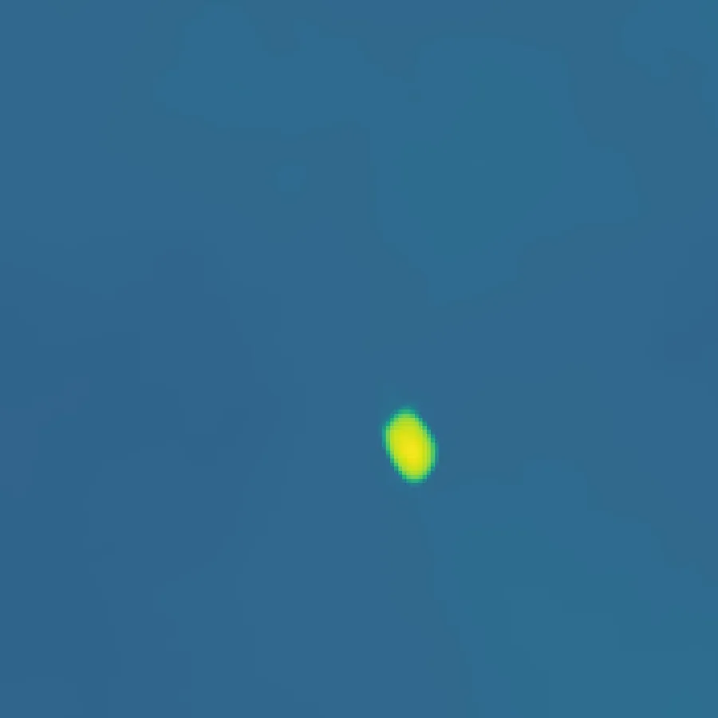
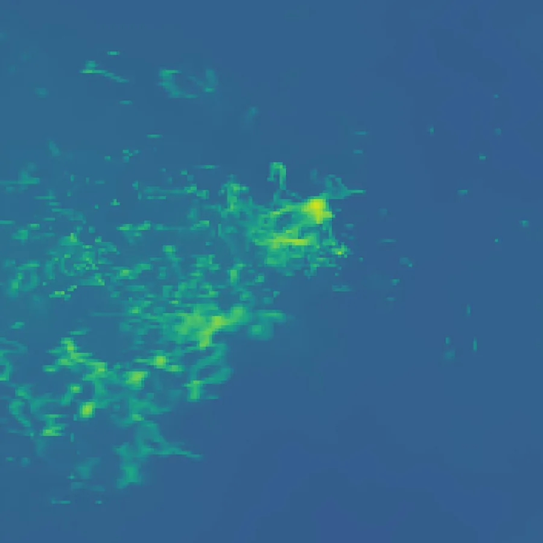
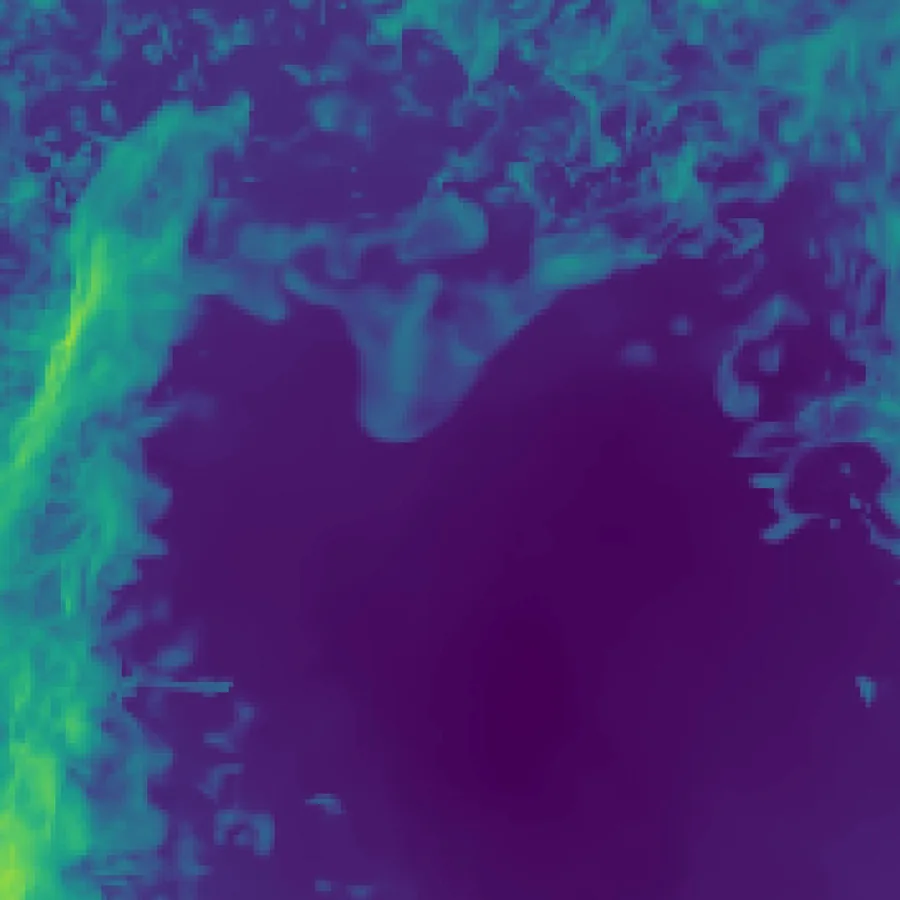
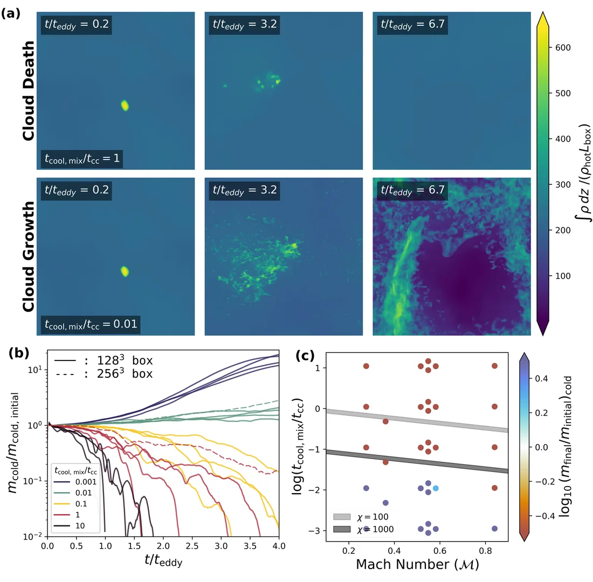

Survival of higher overdensity cold gas in a turbulent, multiphase medium
The question
The hot gas in galaxy clusters isn't uniform. Mixed into it are clouds of much colder gas, and the gas around them is turbulent. That turbulence tends to tear cold clouds apart and mix them into the hot phase. But where hot and cold gas mix, the mixture can cool quickly and join the cloud, so a cloud can survive and even grow if cooling wins the race.
Earlier work (Gronke et al. 2022) found a simple rule for who wins: a cloud survives when the cooling time of the mixed gas, tcool,mix, is shorter than the time turbulence needs to crush the cloud, tcc. That rule was tested mostly for clouds about 100 times denser than their surroundings, typical of the gas around galaxies. In the hotter intracluster medium, clouds are closer to 1000 times denser, and that regime had barely been explored.
What we did
Following the setup of Das & Gronke (2024), I ran 33 three-dimensional Athena++ simulations of cold clouds at 4 × 104 K, 1000 times denser than the 4 × 107 K turbulent gas around them. I varied the turbulent Mach number between 0.25 and 0.75 and the cloud size, so that tcool,mix/tcc spans 0.001 to 10, and repeated runs with different random turbulence and at higher resolution to check that the results held up.



What we found
Clouds only survived when tcool,mix/tcc ≲ 0.01. That is about ten times lower, one dex, than the boundary found for less dense clouds, so clouds a thousand times denser than their surroundings need to cool much faster to survive. The trend held across Mach numbers, resolutions and random seeds.
A likely reason is that turbulence never lets up in these boxes. When a cloud is pushed along by a steady wind, the shear around it drops over time and mixed gas can collect and cool in the calmer tail. In constantly turbulent gas there is no such quiet region, which makes survival harder. Pinning down exactly where the new boundary lies will take further simulations.
